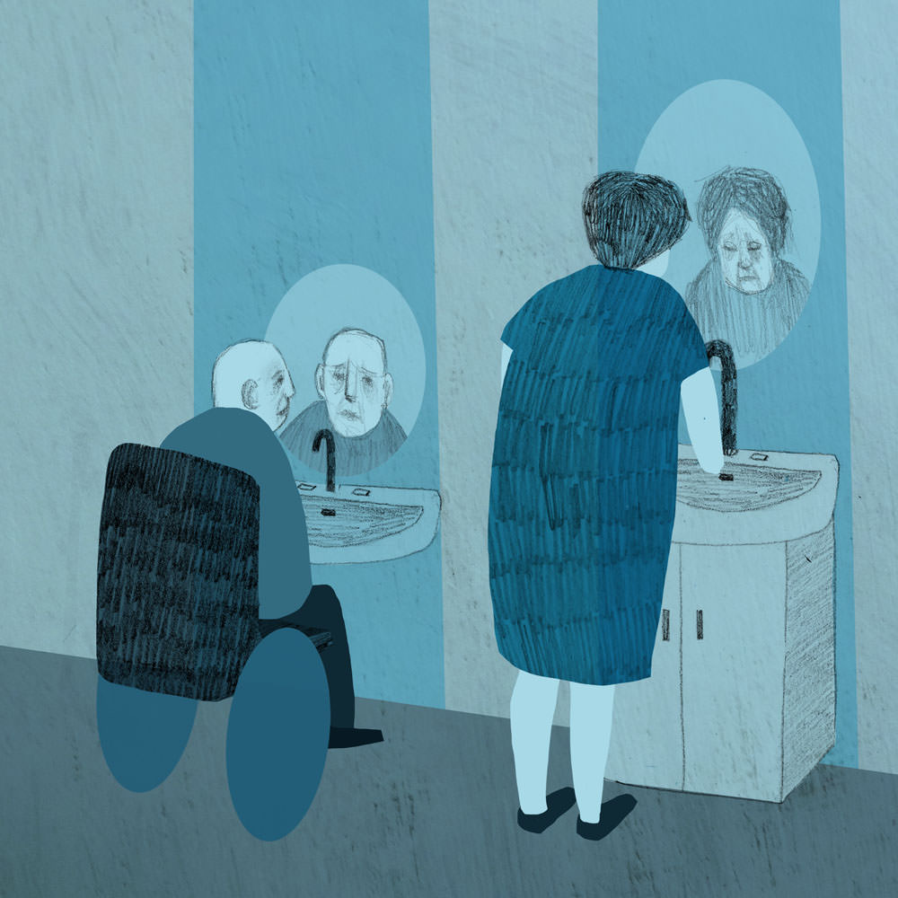
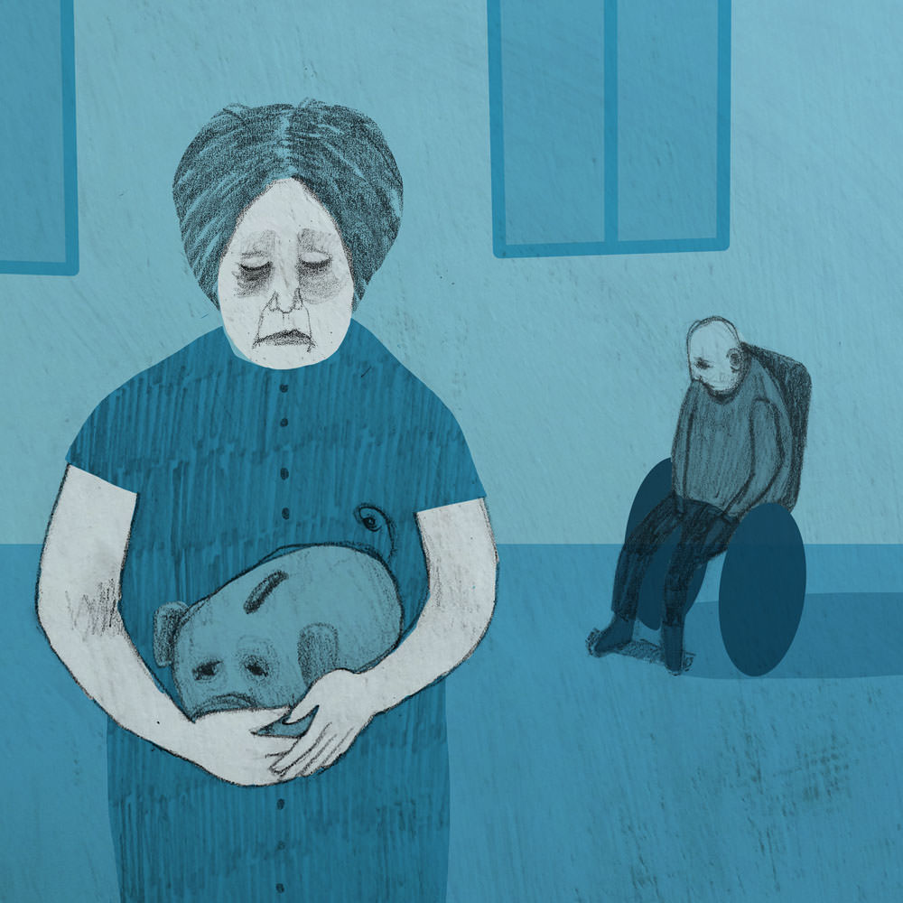
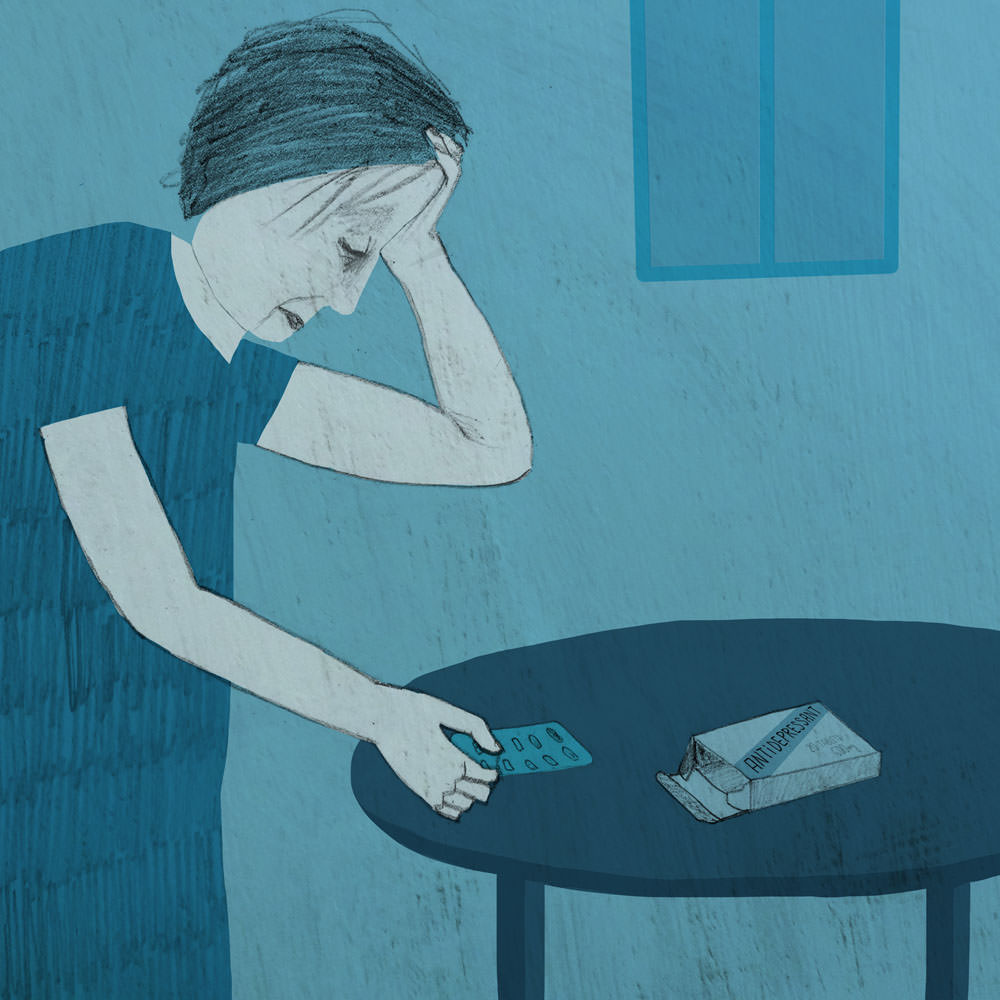

Main characteristics: hierarchical, inward looking, blame culture, risk averse, people are more dependent on the state, more competitive, some people are excluded and feel isolated, low morale demotivated, undervalued workforce, sceptical more scepticism, not person centred, increase in inequalities, fear and mistrust, professional barriers, power and control in hands of professionals, self protectionism, professionals as experts, dis-empowerment.
Today in 2025 Scotland's health and social services are on the brink of collapse. More than a decade after The Christie Commission called for urgent public sector reform to prepare for a tidal wave of demand in the face of a rapidly ageing population and shrinking budgets, little progress has been made.
The demographic time bomb has gone off. Almost half the population is over 50, while a third is aged over 65 and Scotland's fragmented, complex and much reduced public services have reached crisis point as need outstrips supply.
Attempts to transform the culture and practices within social services have failed as a result of entrenchment among professionals and the short-termism of politicians chasing office rather than long term sustainable change.
Plans to move to more community-based local care with much wider collaborative working, not just between health and social services, but between the public, private and third sectors, have failed to gather momentum, due in part to a lack of leadership from within the public services.
Budgetary inflexibility and inconsistencies between national targets and local outcomes have also been major stumbling blocks.
In the absence of a willingness to raise new revenues through higher taxes, fewer staff are having to achieve more with less. Staff have taken on bigger work loads and wider roles.
The majority of social workers are in their 50s, after years in the profession, many are worn down by bureaucracy, budget cuts, rising workload and their low public status.
Many old timers bemoan the lack of leadership and support from their managers and directors of social work and complain they feel hamstrung by their employers and unable to do their job properly.
Last month, speaking at the annual Scottish Association of Social Workers conference, senior social worker Meredith West echoed the feeling of many when she said:
“This is not why I came into social work. I came in to make a difference. What we need is a return to our core values of the 1970s.”
While her comments were well received by colleagues, critics say such views have been the biggest problem for the profession which has failed to transform in line with the realities of the 21st century.
“While the social work values of the 1970s may have been radical then, they are not now,” said social services minister, Fraser Murdoch. “The social work profession from training to practice has sought to protect its professional identity, control and power relationships based on the values of yesteryear.”
Plans to empower workers in the sector have failed due to weak implementation by resistant service heads. The poor public image of the profession has resulted in a mismatch between the skills required and the people who can be recruited for the pay offered. Attempts to upskill staff have also faltered because, as expected, training budgets were the first to go when money got tight.
Registration of the profession has been completed but the improvements in care anticipated by the Scottish Social Services Council, and pay increases hoped for by staff, have not materialised. Local authorities pay different rates depending on their own budgets.
Meanwhile cuts in funding to colleges and universities have resulted in fewer student places and the reintroduction of tuition fees has driven away many of tomorrow's social workers and support staff.
Strikes over pay have added to the woes of local authorities struggling to fill the hundreds of vacancies resulting from the critical shortage of social workers and care staff across the country.
Hospitals have been forced to close their doors to all but emergencies, and the lack of support, particularly for the old and vulnerable, has led to demonstrations and protests across the country.
The government, which was forced to recall parliament from summer recess, has responded by offering incentives ranging from significantly enhanced rates to attract former staff back into the profession, to generous golden hellos and fast track schemes to help boost recruitment from within Scotland and the European Union.
In addition the Migration Advisory Committee has agreed to lift regulations on applications from professionals from countries outside the EU, should it be necessary to cast the net wider.
Opposition politicians have blamed the meltdown of social care on poor policy decisions, the lack of joint working with health services and swingeing education cuts.
In a debate on the crisis, shadow social services minister, Jacqueline McGregor, told the chamber: “We have missed opportunity after opportunity to properly address the root causes of deprivation. More than half of all spending is accounted for by interventions that could have been avoided by investing in services that prevent these negative outcomes. Professional protectionism is preventing joint working, causing unnecessary duplication and a shocking waste of tax payers money. We should be using that money to pay staff, particularly those on the front-line, better. I am not surprised we are in this mess when we pay the people who do the most important work the lowest wages.”
Carers' groups, however, have accused politicians from all parties of failing to fix the roof when the sun was shining. There is less money and society's problems are getting worse, with more children in poverty and more older people with no family or friends to look after them.
Inequalities have been exacerbated by the acute financial squeeze reflected in the increasing number of ghettos of “social” refugees.
Prisoner numbers have risen by 30% because of failures to tackle the causes of disadvantage and vulnerability, putting considerable additional pressure on budgets, and diverting resources away from rehabilitation and tackling overcrowding.
More than half of all the young people in Scottish prisons have been in care and adults in the most deprived areas of Scotland are three times more likely to have a long standing illness compared to those living in the least deprived areas.
Against the advice of most public policy experts, money is ploughed into bricks and mortar. As ever, politicians are disinclined to support the closure of their local hospitals because the negative publicity may affect their chances of re-election.
Local authorities are also wedded to tried and tested working practices and continue to invest in large block contracts and old-style solutions such as day centres and care homes despite the fact that clients and surveys constantly tell them what they already know - that most people want to spend time with the people they know and remain in their home as long as they can, preferably until they die.
In a recent interview on Scotland Today, Gordon Morrison, chief executive of the Scotland Patients' Association, said: “Local authorities insist on using anti-societal, artificial institutions which are unresponsive to the needs of individuals and communities. However, as a society we also have to acknowledge our part in this. We want the taxes of America but the services of Scandinavia.”
The gulf between growing expectations of choice and provision has widened. Following growing concern over the cost of personal budgets and negative media stories there has been a backlash against self directed care resulting in the withdrawal of personal budgets for service users.
Self directed care, has long been considered by its critics as a poor use of scarce resources, particularly when money was used to fund leisure activities and trips abroad.
Studies have shown that while giving people choices over what service they access had a positive effect on service users, the budgets led to “increased bureaucracy and poor use of human resources”. Many were poorly managed and sometimes inappropriately used.
The scrapping of personal budgets has resulted in a significant number of job losses among the substantial personal assistant workforce. The now defunct Social Care (Self Directed Support) (Scotland) Act which also allowed authorities to release resources to support carers has led to further strains on the service and a resurgence in the need for residential care as families become unable to support their relatives at home.
Continuous cuts have restricted options. Service users are generally offered the most cost effective and safest solution, not necessarily the one most suited to their personal circumstances, which has led to a lack of trust.
In the main, social workers, who are in charge of budgets and care management, decide what's best for service users based on what people can't do rather than on what they can do. It has become a tick box exercise.
Financial constraints mean a one-size fits all approach is the path of least resistance rather than the more personal one preferred by users and a minority of more enlightened members of the workforce. In some cases people are being given home care packages when simple solutions like a wheelchair or a ramp would do.
Few professionals take any risks for fear of repercussions or negative publicity. The focus is on inputs and outputs. In the recent fly on the wall documentary, Who Cares? one social worker, said:
“People are reliant on the meagre crumbs on our table falling on to them and not having much control over what they do, when they can do it and what support for them might look like. I can see a lot of social isolation for many older people.”
Over the past 12 years the public sector social services workforce has shrunk by around 20% through natural wastage and increased outsourcing to private and third sector organisations and greater competition, particularly in the growing residential care sector.
Young staff are struggling to cope with the complexity of cases and are getting little leadership from their more experienced yet disillusioned colleagues. Bullying is a major problem and less senior staff lack the confidence to challenge their peers. There is little sharing of ideas or practice within social services or with health professionals.
Despite having sold off their own care homes to raise funds for pension pots, local authorities continue to drive down costs in private care homes to levels that are causing concern.
Charities and voluntary organisations say that outsourcing has favoured out-of-town companies taking money and jobs out of the economy. They have highlighted a “worrying” rise in profit-driven global firms entering the market and the potential consequences in the case of their financial collapse. There are no contingency plans.
All of this has happened against a backdrop of increased activity in communities which have found ways of regenerating their neighbourhoods and offering a greater sense of belonging to people within them.
With online shopping killing off the edge of town retail parks, high streets in some areas are being reclaimed by local food cooperatives and social enterprises. A number of local communities are also developing their own services from youth groups to lunch clubs and conference facilities through Community Development Trusts. Members of these communities have in many cases become the new family and support for the many who now live on their own.
However, collaboration between organisations, individuals and communities, where arguably the most progress can be made, is patchy and draws scepticism from many within the profession who feel crippled by local authorities. They find it easier to go with the status quo and this has led to increased mistrust and jealousies between communities and professionals.
The government is introducing new measures to tackle the pressures caused by the ageing population and its dependency on services. Following emergency legislation passed by parliament last week, the age at which people can collect their pension and qualify for free concessionary travel rises to 70 from January 1.
In addition, carers will be able to benefit from new family support leave (FSL), which will allow them to take time off work with statutory pay rather like maternity leave. Under the scheme, carers will be able to take up to a year off during which time their post will be protected. Some firms have promised to offer enhanced FSL rates.
Older people nonetheless make a major positive contribution to the economy and society. As well as contributing financially – through taxes, spending power and donations – they make a significant social contribution as active citizens, through volunteering and providing the ‘social glue’ that binds communities and families.
As part of the government's Ageing Well agenda, many older people take part in intergenerational learning hubs which have been established in local libraries and cafés and people over 55 now account for a third of undergraduates in Scotland's universities.
The country is also benefiting from the “reserve” silver army. Women are going back to work in their 60s and 70s, putting in an average 16 hour week as work becomes the “new” solution to the pension crisis.
National retailers, keen to employ more part-time staff to save costs, actively seek out older employees, offering flexible working options that suit both sides. Many offer unpaid leave for grandparents and carers as well as “Benidorm leave”, in which their jobs are kept open for them while they head to warmer climes in the winter.
Most firms have an upper age limit of 78. The government has recently launched a recruitment drive for older people to work as teaching assistants in schools to provide good role models to young children and take advantage of the older population's experience and knowledge.
Initiatives like these have led to a greater appreciation of the older generation and a consequent reduction in complaints about ageism. However, Age Concern Scotland is campaigning to improve the “inadequate” levels of care currently provided to older people.
Broadband, with a bandwidth that can support audio and video is available across the country, enabling telehealth to be widely used in rural areas which is reducing demands on the service from chronically ill patients. Health officials commonly use social media to alert people about outbreaks of illness in their area.
Local authorities have also invested millions of pounds in door and bed sensors and flood alert warnings to help vulnerable people stay in their homes longer. While councils are saving money, relatives are also benefiting from peace of mind, knowing that any incidents will be picked up by monitoring teams.
Gadgets of all kinds are making life easier for those who can afford them, from intelligent stair lifts to (intelligent) refrigerators that read bar codes to identify use by dates, informing their owner that they should use the product before it goes out of date. Many models can be linked to the internet to record items as they are consumed and suggest menu options.
GPS location devices are transforming the lives of people with dementia, and their families. The tiny devices can be embedded into shoes, walking sticks, hats or other items of clothing so that people who go missing can be located or given information about where they are to help them find their way home.
While there is a growing pressure on care budgets, the management of dementia is one of Scotland's success stories. The World Health Organisation has widely praised Scotland’s innovative and forward thinking approach.
Scientists have developed one of the most advanced screening programmes in the world which has enabled specialists to diagnose the condition very early on. This, combined with comprehensive training for care staff, carers, and the general public through the government funded courses, is transforming the quality of life for people with the condition.
Following a global campaign to reduce tight regulation around new ground-breaking drugs, patients have much faster access to life-changing treatments and dementia scientists now equal the numbers of researchers working in cancer.
The universal free prescription of Vitamin D tablets to everyone over the age of 50 together with improved levels of exercise and activity and better diets has significantly delayed onset.
Nonetheless as a result of the growing ageing population the number being diagnosed has doubled in the last decade. Carers are, however, benefiting from dementia friendly working practices which gives them flexibility to take time off to care for relatives and still keep their job.
Fiona, 70, and her husband Paul, 78, have recently moved from their four bedroom house in Aberdeen to a single storey villa three miles away after Paul, a former railway worker, suffered a stroke which has left him with weakness on his left side and impaired his speech.

The villa has been specially adapted at great expense. None of the 15 properties they looked at fitted their particular needs.

Paul has had to give up playing bowls and rarely sees his old friends which has led to bouts of depression. Fiona is his main carer and they survive on their modest pensions. Fiona should get a carer’s allowance but she has not yet applied for it as the online procedure is too daunting and her request for help from social services has not resulted in any action so far.
Paul really needs a speech therapist but they are in short supply and Fiona doesn't like to complain as she knows everyone is under pressure. There is some money left over from the house sale which they had hoped they would pass on to their children, but it seems increasingly likely that it will go towards residential care for Paul.

Fiona has been doing her best but is now struggling to cope and has started taking anti-depressants. Even though they only moved a short distance from their old address, the friendship and support network of neighbours they had built up over 30 years is no longer as accessible and has left a void in their lives.
The couple's children Struan, 40, and Livia, 36, have both moved away from the area for work and can visit only occasionally. Caught up with their own family lives, they have not noticed how serious the situation with their father is and are making no effort to ensure their parents have regular contact with their grandchildren. Fiona’s sister Michelle has just been diagnosed with multiple sclerosis and also needs Fiona’s help.
reports from the front line of care
Someone wise once told me that everyone has something they care about. You just have to find out what it is, then ask them about it and listen. I had a poster made with that written on it and stuck it in my office so, when things were bad, which is quite often these days, I could remind myself why I became a social worker.
Today even those words don’t help because whatever I think there is little I can really do. My hands are tied. I am the puppet and my local authority is pulling the strings. My colleagues and I are screaming from the roof tops, but no one is listening. So, I hope you are, well reading at least. Things have gone too far and I can’t keep quiet any more. Bad management and cost cutting is killing people. Yes, killing people.
Last week I was part of a team sent to chase up some accounting “anomalies” regarding four patients in their nineties. We found one of them dead in her house. No one had been there for weeks even though she was supposed to have been visited by a health and social care practitioner every Thursday. A new member of staff had come in but no one had properly briefed him about who he was required to visit. Apparently there was a language issue. He was from Argentina.
One of the other patients is now in hospital in a critical condition – he wasn’t taking his drugs – and two have gone AWOL. We don’t know where they are. They could be dead too. What are we supposed to tell their families?
How did they slip through a system that is supposed to be all about caring you ask. Well, targets for one thing and too much interference from the suits who don’t know what they are talking about. Plus there’s not enough time spent talking to the people who matter. The managers are always in meetings about budgets, all our training has been cancelled and we only deal with the really serious stuff that might get in the newspapers.
We are so busy making sure we have covered our backs on the bureaucracy that we rarely get out to see people. I see the office cleaner more than I see clients. We are failing the people who need us most. Now we’ve gone into overdrive and have been ordered by our panicked management to visit everyone in receipt of social care. Yeah, that’s a really good use of our dwindling budgets.
This is one of many scandals. Last month three siblings ended up staying at a hotel because we couldn’t find any foster care for them and there was no residential home with space for them. The hotel had been risk assessed, of course! Bet that made their parents feel better. Fortunately for them that meant the mini bar was locked, though I am sure my colleagues probably could have done with a couple of drinks.
I don’t want to do this any more but I don’t have much choice as I am a single mum with two kids. I don’t want them ending up in the system. I know how bad it is.